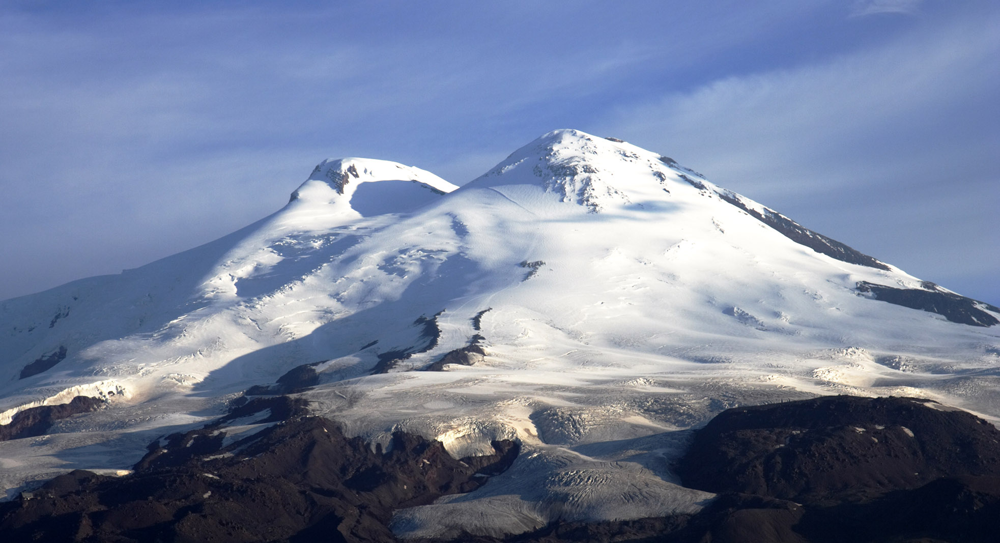

«Две вершины Кавказа»
В СКФО снимают большое документальное кино о людях, религиях и жизни современного кавказского мира
Съемки документального фильма под названием «Две вершины Кавказа», посвященного взаимоотношению людей и религий, объединенных историей, культурой и территорией, проходят в регионах Северо-Кавказского федерального округа.
Это будет двухсерийный фильм, который расскажет о жизни молодых жителей Кавказа, об их вероисповедании, о взаимоотношениях между представителями двух основных монотеистических религий: христианства и ислама.
Герои фильма через свои личные истории, личный опыт и переживания познакомят российскую молодежную аудиторию с современными взаимоотношениями мусульман и христиан на Северном Кавказе, с историей ислама и христианства на этой территории. Фильм расскажет и об основных принципах традиционных для России вероучений, развенчает мифы и стереотипы, удивит откровениями героев о трансформации религиозных воззрений, о многоженстве и межконфессиональных браках.
По словам режиссера и сценариста фильма Аси Гойзман, необходимость такого кино вызвана тем, что молодые жители регионов России, не знакомые с мусульманской культурой, зачастую становятся жертвами тенденциозной информации о традициях и постулатах ислама. В то же время молодежь Северного Кавказа, где доминирует мусульманство, получает из ряда источников недостоверную информацию о христианстве, а также об отношении представителей данной религии к исламу.
Съемки фильма начались в Дагестане, в самом толерантном городе мира — Дербенте, откуда на Северный Кавказ пришли иудаизм, христианство и ислам. В древнейшем городе России столетиями свободно исповедовали все три авраамические религии, а сегодня здесь на соседних улицах можно увидеть мечеть, православную церковь, синагогу и армянский храм.
Зрителям покажут уникальное архитектурное наследие, сохранившееся до наших времён: крепость Нарын-Кала, первый христианский крестово-купольный храм России, старейшую в нашей стране Джума-мечеть и древнее кладбище Кырхляр, где похоронены 40 сподвижников пророка Мухаммеда.
Съемки также запланированы в Чечне, Северной Осетии, Кабардино-Балкарии, Карачаево-Черкесии и Ставропольском крае.
Идея создания фильма принадлежит автономной некоммерческой организации «Лаборатория общественных проектов». Фильм снимается при поддержке Института развития интернета, а также аппарата полномочного представителя Президента Российской Федерации в Северо-Кавказском федеральном округе и информационно-аналитического портала «Кавказ Сегодня».
Премьера фильма состоится осенью 2020 года на видеохостинговой платформе YouTube и во всех социальных сетях информационно-аналитического портала «Кавказ Сегодня».